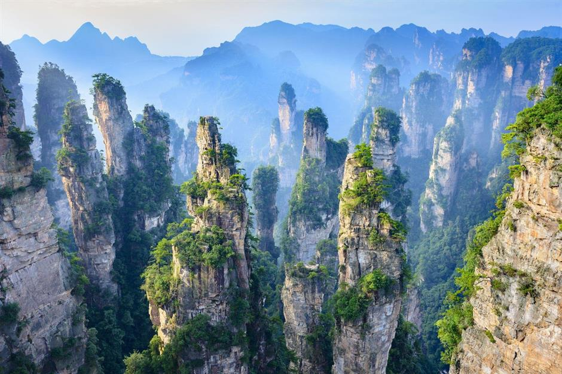

Hello my name is Sharm from England, at the moment I am working through the Frontend Masters Bootcamp.
The website is created by myself as the course instructed to pratice writing HTML, no CSS will be added yet thats why its look like this, awful.....but having alot of fun with it so far.Over my time studying web development I have really enjoyed learning more about HTML and CSS, I felt like at one stage I would never understand any of this, it felt like a second language that would never sink into my brain, but the more I am practicing it the more I am starting to remember and learn how and when to use bits of code. I have also managed to look at some JavaScript too, which is becoming more easier to understand but that is going to take a lot more practicing to understand further, but loving it so far, ever bit of code understood feels like an achievement.
“If there is no struggle, there is no progress.”
Frederick Douglass
I dont really want to post a picture of myself, so instead I found Zhangjiajie National forest park, located in Zhangjiajie, Hunan Province, China.
Its really beautiful to look at and I think the film director of Avatar definitely got inspiration from this place.
To read more about this Zhangjiajie National forest park, vist China Hightlights
Check out the video below if your really bored, can not promise that you will laugh, but its something to watch if there is nothing better to do.